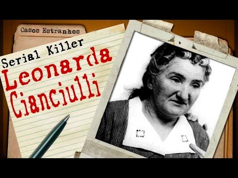

 A historia macabra de hoje parece uma historia de bruxa de conto de fadas, mas o caso era real e aconteceu na Italia na decada de 40. Leonarda Cianciulli, morava em Correggio na Italia, era casada, tinha uma pequena loja e era muito respeitada pela comunidade em que vivia, principalmente por seus dons espirituais e videntes. Sua crenca iniciou certa vez em que consultou uma cartomante que a alertou que seus filhos morreriam de forma precoce. O terrivel destino se cumpriu, das 17 vezes em que esteve gravida, 3 vezes ela perdeu o bebe e 10 filhos morreram ainda na infancia. Sobraram somente 4 filhos, os quais ela protegia a qualquer custo. Quando seu filho favorito, Giuseppe, foi convocado pelo Exercito (quando a 2a Guerra Mundial estava prestes a estourar), Leonarda desesperada chegou a conclusao que deveria realizar sacrificios humanos para que seu filho fosse salvo e protegido. Ela entao matava suas vitimas e para ocultar o corpo, os transformava em sabao e bolinhos que servia a seus convidados, que por um bom tempo nao desconfiaram do conteudo dos quitutes. Que fim ela levou? Leonarda foi presa e mantida em um manicomio criminal, onde morreu aos 76 anos de idade.